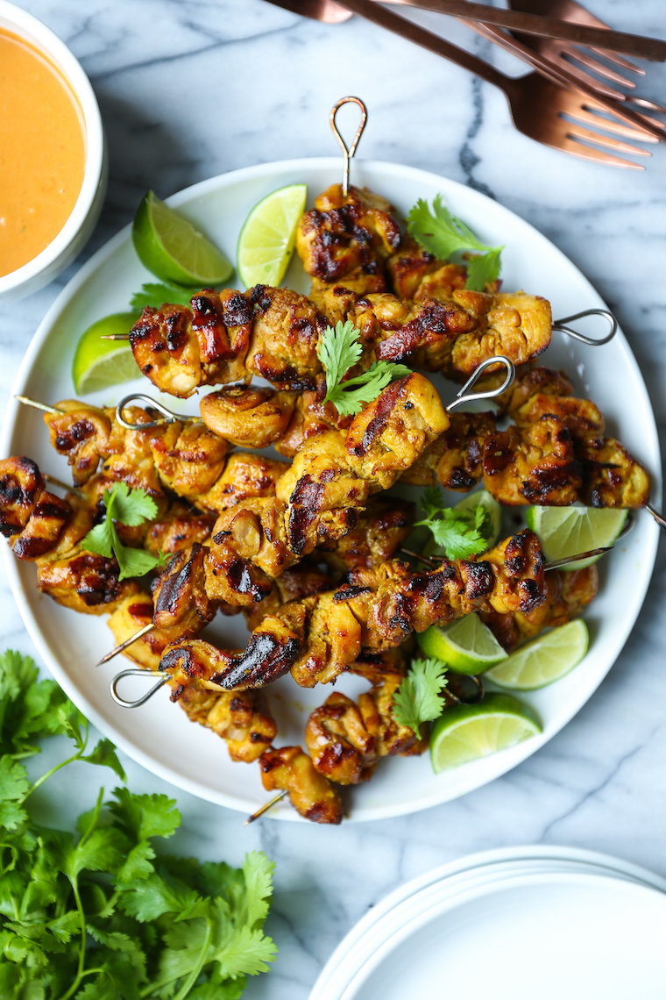

Chicken Satay with Peanut Sauce

A favourful chicken satay with peanut sauce in a Thai-style chicken skewer way. Serve with rice for a complete meal!
This is a simple and easy meal to recreate and is a hit favourite with anyone that tries it!
Ingredients
- 1 1/4 cup unsweetened coconut milk, divided
- 5 teaspoons yellow curry powder, divided
- 4 teaspoon white sugar, divided
- 4 teaspoon fish sauce, divided
- ½ teaspoon granulated garlic
- 1 pound skinless, boneless chicken breasts, cut into strips
- 8 skewers
- 2 tablespoons olive oil
- ½ cup chicken broth
- ¼ cup creamy peanut butter
- 1 tablespoon lime juice
Steps
- Combine 1/2 cup coconut milk, 2 teaspoons curry powder, 1 teaspoon sugar, 1 teaspoon fish sauce, and granulated garlic in a bowl. Add chicken pieces and toss to coat. Cover and refrigerate for at least 2 hours.
- Remove chicken from marinade and shake off excess. Discard remaining marinade. Thread marinated chicken onto skewers.
- Heat olive oil in a large skillet over medium-high heat. Cook chicken skewers in hot oil until browned and no longer pink in the center, 3 to 4 minutes on each side.
- Bring remaining 3/4 cup coconut milk to a simmer in a small saucepan over medium heat. Stir in remaining 3 teaspoons curry powder and simmer for 4 minutes. Add chicken broth, peanut butter, lime juice, remaining 3 teaspoons sugar, and remaining 3 teaspoons fish sauce; simmer for 1 minute. Serve dipping sauce with chicken skewers.